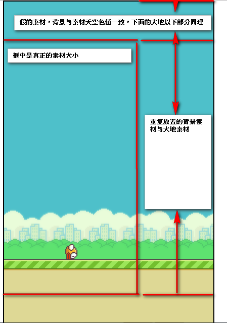
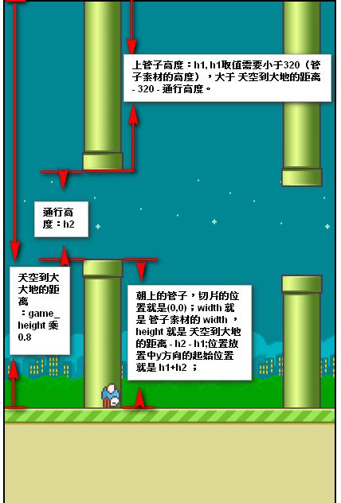
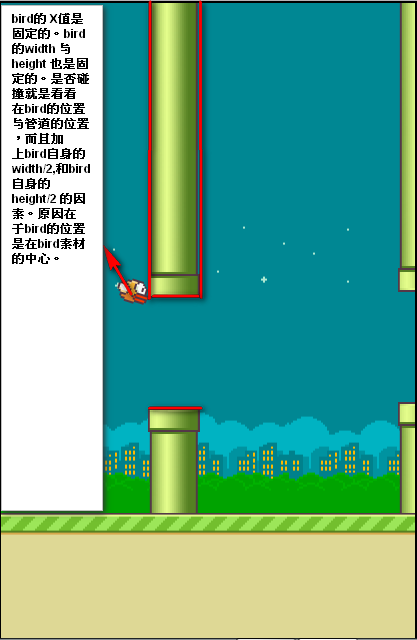

原生JavaScript+Canvas制作FlappyBird小游戏(2)
背景类，地面类，小鸟类，管道类
第二天开始编写游戏界面的动画元素：
所有的动画元素都继承自Actor类，每创建一个动画元素，调用父类构造方法将其放入到game.actors数组。
注释：由于第二天对代码进行了一定重构，所以直接看不懂的变量名都会在最后进行解释，另外在Game类中新增加了属性也会在后边给出代码，另外还会给出resource.json 与 config.json这些都作为实际参数，另：game是Game的实例化对象，根据上一篇博客的介绍，传入canvas的id进行Game的实例化。
背景类 Background.js：
背景图片是固定长宽的，所以想让背景看起来填充了整个画布，就是让它在X轴方向多绘制几张，这里是3张，是因为考虑到远方背景也可以移动，移动了一张背景后，瞬间将第一张背景的X值设置为0，也就是让它再撤回来，这就是动画的原理。
然后需要渲染天空的颜色，图片顶部与画布顶部之间存在的空白利用猫腻矩形填充，填充色就是天空的颜色，这样看起来就像图片铺满了画布
绘制过程如图（这个绘图软件在我这里出现了部分乱码，有的字打不出来，见谅）：
1
2
3
4
5
6
7
8
9
10
11
12
13
14
15
16
17
18
19
20
21
22
23
24
25
26
27
28
29
30
31
32
33
34
35(function(){
var Background = window.Background = Actor.extend({
init : function(){
// 随机选择一张背景图
var image_no = parseInt(Math.random()*2);
var image_name = "bg_day";
// 设置猫腻矩形的背景色
this.sky_color = game.config.day_color;
if(image_no == 1){
image_name = "bg_night";
this.sky_color = game.config.night_color;
}
this.image = game.resource[image_name];
// 设置图片的位置
// 需要将画布中天空到地平线的高度减去图片中天空到地平线的高度的值设置为绘制的 Y轴初始值
// img_bg_horizon为图片中天空到大地之间的距离
this.x = 0;
this.y = game.horizon_Y - game.config.img_bg_horizon;
this._super();
},
update : function(){
},
render : function(){
// 绘制猫腻矩形
game.ctx.fillStyle = this.sky_color;
// 计算可能存在一定误差
game.ctx.fillRect(0,0,game.game_width,this.y+1);
game.ctx.drawImage(this.image,this.x,this.y);
game.ctx.drawImage(this.image,this.x + game.config.img_bg_width,this.y);
game.ctx.drawImage(this.image,this.x + game.config.img_bg_width * 2,this.y);
}
});
})();大地类 Land.js:
大地类没啥可说的，大地图片的绘制Y轴的起点需要在 画布中地平线的Y轴位置 减去 图片中地平线的Y轴位置
需要提的一点是大地的移动速度由config.land_speed调控，是考虑到后期会有游戏场景的切换，比如小鸟撞到杆子的时候，大地的移动速度是0
利用config这个中介者方便调控1
2
3
4
5
6
7
8
9
10
11
12
13
14
15
16
17
18
19
20
21
22
23
24
25
26
27// 大地
(function(){
var Land = window.Land = Actor.extend({
init : function(){
this.image = game.resource["land"];
this.x = 0;
this.y = game.horizon_Y
this._super();
},
update : function(){
// 这里速度由config中的land_speed调控
this.x -= game.config.land_speed;
if( this.x < -1*game.config.img_land_width ){
this.x = 0;
}
},
render : function(){
game.ctx.drawImage(this.image,this.x,this.y);
game.ctx.drawImage(this.image,this.x + game.config.img_land_width,this.y);
game.ctx.drawImage(this.image,this.x + game.config.img_land_width * 2,this.y);
game.ctx.fillStyle = game.config.land_color;
game.ctx.fillRect(0,this.y + game.config.img_land_height,game.game_width,game.game_height- this.y - game.config.img_land_height);
}
});
})();小鸟类 Bird.js：
小鸟类是十分复杂的一个类，虽然代码中注释很多，在这还是需要说很多。
++ 首先是图片，小鸟自身有不同颜色且有不同形态，所以需要为其进行选择，同时小鸟除了落地，所有场景都是在扑打翅膀的，所以每次渲染都要改变其图片状态。
++ 第二是小鸟的位置，要明白小鸟本身没有向前飞，而是大地与管子向左移动，所以小鸟的X坐标是固定的，由于这个值会反复用到，我在Game类中添加了这个属性。这个属性值随着画布的宽而改变，画布宽 乘以 1 - 黄金分割数，看起来就要优美一些。。
++ 第三是的纵向运动，这设计它的旋转和高度的变化。旋转和坐标系的位置有关，每次旋转都需要先保存当前状态，移动画布的原点，然后整个画布旋转，再返回到之前的状态，而位置又和小鸟图片有关，不详细展开了。高度变化与下落算法有关，就如同高中的自由落体运动。所以小鸟的运动需要单独设置一个帧，来监控小鸟的状态。下落算法参照自由落体运动，每帧小鸟下落时越来越快的，这个值和帧数成正比。（高中物理公式推导）。这样通过距离的计算量就相对于公式的计算量少多了。1
2
3
4
5
6
7
8
9
10
11
12
13
14
15
16
17
18
19
20
21
22
23
24
25
26
27
28
29
30
31
32
33
34
35
36
37
38
39
40
41
42
43
44
45
46
47
48
49
50
51
52
53
54
55
56
57
58
59
60
61
62
63
64
65
66
67
68
69
70
71
72
73
74
75
76
77
78
79
80
81
82
83
84
85
86
87
88
89
90
91
92
93
94
95
96
97
98
99
100(function(){
var Bird = window.Bird = Actor.extend({
init : function(){
this.bird_no = parseInt(Math.random()*3);
this.image_no = 0;
this.image_name = [
"bird"+this.bird_no+"_0",
"bird"+this.bird_no+"_1",
"bird"+this.bird_no+"_2"
];
this.image = game.resource[this.image_name[this.image_no]];
// 初始位置
this.x = game.bird_X;
this.y = game.horizon_Y / 2 - game.config.img_bird_height / 2;
// 小鸟的真实高度与宽度
this.width = game.config.bird_width;
this.height = game.config.bird_height;
// 小鸟飞翔初始旋转角度
this.degree = 0;
// 小鸟是否向上飞翔
this.is_fly = false;
// 是否死亡
this.is_die = false;
// 除了游戏场景，其他场景的小鸟仅仅是扇动翅膀，所以需要一个控制变量
this.is_flappy = game.config.bird_is_flappy;
// 小鸟的频率
this.fno = 0;
this._super();
},
update : function(){
this.is_flappy = game.config.bird_is_flappy;
if(!this.is_die){
//控制小鸟扇动翅膀的频率
this.fno % game.config.bird_flappy_fno === 0 && this.flappy();
}
// 在游玩游戏的场景下,小鸟才会上升和下降
if(!this.is_flappy){
if(this.is_fly){
// 设置小鸟在固定帧内上向上飞，上飞的距离是递减但是固定的
this.y -= game.config.bird_fly_percent*(game.config.bird_fly_distance - this.fno);
// 上飞固定帧之后准备降落
if(this.fno == game.config.bird_fly_fno){
this.is_fly = false;
}
}else{
// 下落时满足下落算法
this.y += game.config.bird_down_percent * this.fno;
}
this.degree += game.config.bird_down_degree;
}
// 检测天空,碰到天花板就准备下落
if(this.y < 0){
this.y = 0;
this.is_fly = false;
}else if(this.y > game.canvas.height * game.config.img_bg_proportionY - game.config.bird_height / 2){
// AABB盒碰撞检测，检测是否碰撞是看紧紧裹着小鸟的矩形的四条边进行碰撞检测
// game.config.bird_height/2 是小鸟的中心点距离小鸟的肚皮（底边）的距离
this.y = game.canvas.height * game.config.img_bg_proportionY - game.config.bird_height / 2;
// π/2
this.degree = Math.PI / 2;
clearInterval(game.timer);
}
this.fno ++;
},
render : function(){
// 做旋转动画需要移动坐标系的原点，所以要保存旋转前的坐标状态，旋转之后又恢复。这样动画才互不影响
game.ctx.save();
game.ctx.translate(this.x ,this.y);
game.ctx.rotate(this.degree);
// 由于画布原点已经移动到了预想中小鸟图片中心点的位置，所以绘制的时候将小鸟向左上移动将图片中心点与设置中心点重合
game.ctx.drawImage(this.image,- game.config.img_bird_width / 2,- game.config.img_bird_height / 2);
// 添加以下语句可以确定小鸟的位置
// game.ctx.fillRect(0,0,10,10);
game.ctx.restore();
},
// 扇动翅膀
flappy : function(){
this.image_no ++ ;
if(this.image_no > 2){
this.image_no = 0;
}
this.image = game.resource[this.image_name[this.image_no]];
},
// 向上飞
fly : function(){
// 首先小鸟下降的频度置零
this.fno = 0;
// 设置小鸟每次向上飞时朝上的弧度为0.3
this.degree = game.config.bird_fly_degree;
this.is_fly = true;
},
die : function(){
this.is_die = true;
this.image_no = 1;
}
});
})();管道类 Pipe.js:
管道类同样是一个复杂的类。
++ 首先是画管道，管道是成对出现，然后是开口距离固定，每组管道与管道之间的距离是固定的。所以需要一个小算法来画管道。需要知道上边管道的高度（随机值），再来判断下边管道的高度。渲染时不直接添加图片，而是需要切图，即ctx.drawImage()需要设置9个参数。
++ 还值得注意一点的是，管道不能调用父类的构造函数，因为这会造成渲染重叠问题，小鸟的渲染级别一定要比管道高（即小鸟不会被管道遮住）。但管道是在定时器中按一定规则加载的。它会不停的生成，所以这里的解决方法是把它放置到一个数组pipes[]里，game.js中再将pipes[]数组push进入actors[]数组中，等它push之后再push小鸟对象进入actors[]数组。这样小鸟的渲染优先级就高于管道了。
++ 管道在跑出画布之后应该进行删除，只要调用pipes[]的shift方法就行。需要注意的是调用时机，需要在完全跑出去时调用。同时。game.js遍历渲染actors[]数组时，对push进去的pipes[]添加render()与update()方法。
++ 为了实现按一定距离出现管子，需要配置管子的编号，每当 大地移动的距离 除以 管子组与管子组之间的距离 的 Int 值比当前管字编号大，就新增管子，这样是方便对游戏参数进行调控，所以这个固定距离设置在config里。还需要参照Game.js加以理解这个功能。
++ 碰撞检测不是为小鸟添加，而是为管子添加，管子来判断小鸟到底有没有碰到它所以涉及一个小算法。画个图其实也就能明白了。
绘制过程如下图：

1
2
3
4
5
6
7
8
9
10
11
12
13
14
15
16
17
18
19
20
21
22
23
24
25
26
27
28
29
30
31
32
33
34
35
36
37
38
39
40
41
42
43
44
45
46
47
48
49
50
51
52
53
54
55
56
57
58
59(function(){
var Pipe = window.Pipe = Actor.extend({
init : function(){
this.pipe_down = game.resource["pipe_down"];
this.pipe_up = game.resource["pipe_up"];
// 每一组管子之间的距离是相等的
this.pipe_between_space = game.config.pipe_between_distance;
// 随机一个高度，这个高度应该满足一个区间，区间应当对上对下的高度分配差不多,最小高度应该为另外一边恰好为一边管子图片的最大高度时
var pipe_min_height = game.game_height - game.config.pipe_height -game.config.pipe_between_distance;
this.pipe_down_height = pipe_min_height + parseInt(Math.random()*(game.config.pipe_height - pipe_min_height));
this.pipe_up_height = game.horizon_Y - this.pipe_down_height - game.config.pipe_between_distance;
// 设置管子长宽
this.width = game.config.pipe_width;
this.height = game.config.pipe_height;
//管子出现的位置 原始设置为1.5的屏幕宽长度
this.x = game.game_width * game.config.first_pipe_appear;
// this._super();
game.pipes.push(this);
game.config.pipe_arr_length ++;
game.config.last_pipe_no ++ ;
},
update : function(){
// 管子速度和大地滚动速度应该一致
this.x -= game.config.land_speed;
// 在管子完全经过：即当前管子的宽度+ 管子组与管子组之间的距离时，删除管子
// 否则弹出管子之后画面会存在一定的停顿
if(this.x <= -(game.config.pipe_width + game.config.land_speed * game.config.pipe_appear_fno)){
this.die();
}
// 需要对鸟进行碰撞检测,小鸟的x值是固定不变的
// 首先判断小鸟是否在管子中间
if(game.bird_X + game.config.bird_width / 2 >= this.x && game.bird_X - game.config.bird_width / 2 <= this.x + this.width){
if(game.bird.y - game.config.bird_height / 2 > this.pipe_down_height && game.bird.y + game.config.bird_height / 2 < this.pipe_down_height + game.config.pipe_between_distance ){
}else{
console.log("wooooo!");
// clearInterval(game.timer);
}
}
if(game.bird_X + game.config.bird_width / 2 >= this.x + this.width && !this.is_bird_passed){
this.is_bird_passed = true;
game.score ++ ;
}
},
render : function(){
// 画图时应当对图片进行切取
game.ctx.drawImage(this.pipe_down,0,this.height-this.pipe_down_height,this.width,this.pipe_down_height, this.x ,0,this.width,this.pipe_down_height);
game.ctx.drawImage(this.pipe_up,0,0,this.width,this.pipe_up_height, this.x ,this.pipe_down_height + game.config.pipe_between_distance,this.width,this.pipe_up_height);
},
die : function(){
game.pipes.shift();
game.config.pipe_arr_length --;
}
});
})();中介者 Game.js：
有部分改动。之后改动应该会小许多。新增方法setConfig 单独处理配置各种参数，1
2
3
4
5
6
7
8
9
10
11
12
13
14
15
16
17
18
19
20
21
22
23
24
25
26
27
28
29
30
31
32
33
34
35
36
37
38
39
40
41
42
43
44
45
46
47
48
49
50
51
52
53
54
55
56
57
58
59
60
61
62
63
64
65
66
67
68
69
70
71
72
73
74
75
76
77
78
79
80
81
82
83
84
85
86
87
88
89
90
91
92
93
94
95
96
97
98
99
100
101
102
103
104
105
106
107
108
109
110
111
112
113
114
115
116
117
118
119
120
121
122
123
124
125
126
127
128
129
130
131
132
133
134
135
136
137
138
139
140
141
142
143
144
145// 利用中介者模式实现类与类之间的通信
// Game类中包含的都是全局变量
// Game类负责游戏初始化(资源加载，参数设置)，类与类之间的通讯，后期还涉及场景的管理
(function(){
var Game = window.Game = Class.extend({
init : function(canvas_id){
this.canvas = document.querySelector(canvas_id);
this.ctx = this.canvas.getContext('2d');
// 配置文件路径
this.config_url = "config.json";
// 资源文件路径
this.resource_url = "resource.json";
this.config = {};
this.resource_obj = {};
this.resource = {};
// 游戏画布的宽高
this.game_width = document.documentElement.clientWidth;
this.game_height = document.documentElement.clientHeight;
// 演员数组
this.actors = [];
// 地平线的Y轴是一个固定的值，所以可以将其单独提出来
this.horizon_Y = 0;
// 管道作为一个特殊的类，我们需要将其单独提出来
this.pipes = [];
// 小鸟的横坐标是个固定值，但是需要根据屏幕进行调整，所以放在Game类
this.bird_X = 0;
// 游戏进程的帧
this.fno = 0;
this.load();
},
load : function(){
var self = this;
// 加载参数文件
Ajax({
"method" : 'GET',
"url" : "config.json",
"async" : true
}).then(function(text){
self.config = JSON.parse(text);
// 设置各种参数
self.setConfig();
// 提示用户加载资源
self.ctx.textAlign = "center";
self.ctx.font = "30px 微软雅黑";
// 0.382+黄金分割数0.618 = 1
self.ctx.fillText("正在加载游戏资源...",self.game_width/2,self.game_height*0.382);
//加载完配置之后引入资源文件
return Ajax({
"method" : "GET",
"url" : "resource.json",
"async" : true
});
}).then(function(text){
self.resource_obj = JSON.parse(text);
// 载入图片资源
// 图片计时器
var count = 0,
// 图片的数目
image_count = Object.keys(self.resource_obj.images).length;
for(k in self.resource_obj.images){
self.resource[k] = new Image();
self.resource[k].src = self.resource_obj.images[k];
self.resource[k].onload = function(){
count ++ ;
self.ctx.clearRect(0,0,self.game_width,self.game_height);
self.ctx.fillText("正在加载图片"+count+"/"+image_count,self.game_width/2,self.game_height*0.382);
if (count == image_count) {
// 目前图片加载完成即可开始游戏
self.start();
}
}
}
}).catch(function(status){
console.log(status);
})
},
setConfig : function(){
var self = this;
// 首先根据屏幕大小设置游戏画布的宽高
if(self.game_width > self.config.window_max_width ){
self.game_width = self.config.window_max_width;
}else if(self.game_width < self.config.window_min_width){
self.game_width = self.config.window_min_width;
}
if(self.game_height > self.config.window_max_height){
self.game_height = self.config.window_max_height;
}else if(self.game_height < self.config.window_min_height){
self.game_height = self.config.window_min_height;
}
self.canvas.width = self.game_width;
self.canvas.height = self.game_height;
// 设置地平线的高度; img_bg_proportionY 是天空到地平线的距离占整个画布高度的百分比
self.horizon_Y = self.game_height * self.config.img_bg_proportionY;
// 0.382是黄金比例数，设置完画布的长宽后可以对小鸟的横坐标进行设置
self.bird_X = self.game_width * 0.382 - self.config.img_bird_width / 2;
// 为管道数组添加render方法与update方法
self.pipes.render = function(){
// 通过配置文件中的len来调控数组
var len = self.config.pipe_arr_length;
for(var i = 0; i < len; i++){
self.pipes[i] && self.pipes[i].render();
}
}
self.pipes.update = function(){
var len = self.config.pipe_arr_length;
for(var i = 0; i < len; i++){
self.pipes[i] && self.pipes[i].update();
}
}
},
start : function(){
var self = this;
self.config.bird_is_flappy = false;
self.background = new Background();
self.actors.push( self.pipes );
self.bird = new Bird();
self.land =new Land();
self.canvas.onclick = function(){
self.bird.fly();
}
self.timer = setInterval(function(){
self.ctx.clearRect(0,0,self.game_width,self.game_height);
// 设置每格一定的距离就出现对管子
// 其想法是让config中 last_pipe_no 记住出现的管子对数 当大地向左移动的总距离 除以 管子组与管子组之间的固定距离
// 当除得的值转为Int后大于管子对数 ，就增加一组管子
parseInt((self.fno * self.config.land_speed ) / self.config.pipe_group_betwenn_distance ) > self.config.last_pipe_no && new Pipe();
for(var i=0,len = self.actors.length;i<len;i++){
self.actors[i].update();
self.actors[i].render();
}
// 游戏帧率增加
self.fno ++ ;
},self.config.game_fno);
}
});
})();资源文件 resource.json:
1
2
3
4
5
6
7
8
9
10
11
12
13
14
15
16
17
18
19
20
21
22
23
24
25
26
27
28{
"images":{
"bg_day" : "images/bg_day.png",
"bg_night" : "images/bg_night.png",
"land" : "images/land.png",
"pipe_down" : "images/pipe_down.png",
"pipe_up" : "images/pipe_up.png",
"bird0_0" : "images/bird0_0.png",
"bird0_1" : "images/bird0_1.png",
"bird0_2" : "images/bird0_2.png",
"bird1_0" : "images/bird1_0.png",
"bird1_1" : "images/bird1_1.png",
"bird1_2" : "images/bird1_2.png",
"bird2_0" : "images/bird2_0.png",
"bird2_1" : "images/bird2_1.png",
"bird2_2" : "images/bird2_2.png",
"number0" : "images/0.png",
"number1" : "images/1.png",
"number2" : "images/2.png",
"number3" : "images/3.png",
"number4" : "images/4.png",
"number5" : "images/5.png",
"number6" : "images/6.png",
"number7" : "images/7.png",
"number8" : "images/8.png",
"number9" : "images/9.png"
}
}配置文件 config.json:
1
2
3
4
5
6
7
8
9
10
11
12
13
14
15
16
17
18
19
20
21
22
23
24
25
26
27
28
29
30
31
32
33
34
35
36
37{
"window_max_width" : 414,
"window_min_width" : 320,
"window_max_height" : 736,
"window_mix_height" : 500,
"game_fno" : 40,
"img_bg_width" : 288,
"img_bg_height" : 512,
"img_bg_horizon" : 408,
"img_bg_proportionY" : 0.8,
"day_color" : "#4EC0CA",
"night_color" : "#008793",
"img_land_width" : 336,
"img_land_height" : 112,
"land_color" : "#DED895",
"land_speed" : 5,
"land_distance" : 0,
"pipe_width" : 52,
"pipe_height" : 320,
"pipe_between_distance" : 110,
"pipe_group_betwenn_distance" : 250,
"pipe_arr_length" : 0,
"last_pipe_no" : 0,
"first_pipe_appear" : 1.2,
"img_bird_width" : 48,
"img_bird_height" : 48,
"bird_width" : 26,
"bird_height" : 24,
"bird_fly_percent" : 1.1,
"bird_fly_fno" : 20,
"bird_fly_distance" : 10,
"bird_fly_degree" : -0.3,
"bird_down_percent" : 0.65,
"bird_down_degree" : 0.055,
"bird_is_flappy" : true,
"bird_flappy_fno" : 3
}